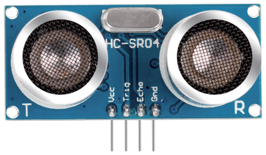
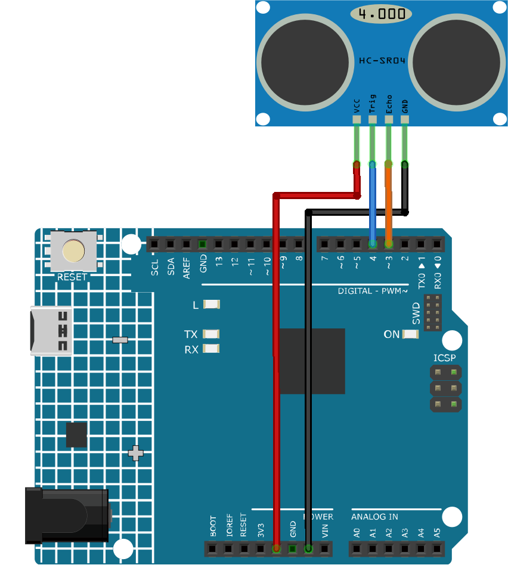

Bemerkung
Hallo und willkommen in der SunFounder Raspberry Pi & Arduino & ESP32 Enthusiasten-Gemeinschaft auf Facebook! Tauchen Sie tiefer ein in die Welt von Raspberry Pi, Arduino und ESP32 mit anderen Enthusiasten.
Warum beitreten?
Expertenunterstützung: Lösen Sie Nachverkaufsprobleme und technische Herausforderungen mit Hilfe unserer Gemeinschaft und unseres Teams.
Lernen & Teilen: Tauschen Sie Tipps und Anleitungen aus, um Ihre Fähigkeiten zu verbessern.
Exklusive Vorschauen: Erhalten Sie frühzeitigen Zugang zu neuen Produktankündigungen und exklusiven Einblicken.
Spezialrabatte: Genießen Sie exklusive Rabatte auf unsere neuesten Produkte.
Festliche Aktionen und Gewinnspiele: Nehmen Sie an Gewinnspielen und Feiertagsaktionen teil.
👉 Sind Sie bereit, mit uns zu erkunden und zu erschaffen? Klicken Sie auf [hier] und treten Sie heute bei!
Ultraschall-Sensormodul (HC-SR04)


Einleitung
Das Ultraschall-Sensormodul (HC-SR04) ist ein Sensor, der mithilfe von Ultraschallwellen Entfernungen zwischen 2 cm und 4 Metern messen kann. Es wird häufig in Robotik- und Automatisierungsprojekten eingesetzt, um Objekte zu erkennen und Entfernungen zu messen. Das Modul besteht aus einem Ultraschall-Sender und -Empfänger, die gemeinsam Ultraschallwellen senden und empfangen.
Funktionsprinzip
Das Modul umfasst Ultraschallsender, Empfänger und Steuerschaltung. Die grundlegenden Prinzipien sind wie folgt:
Ein IO-Flipflop verarbeitet ein High-Level-Signal von mindestens 10us.
Das Modul sendet automatisch acht 40-kHz-Signale aus und prüft, ob ein Pulssignal zurückkehrt.
Wenn das Signal zurückkehrt und das High-Level passiert, beträgt die Ausgabe-IO-Dauer die Zeit vom Senden der Ultraschallwelle bis zu ihrer Rückkehr. Hier gilt: Testentfernung = (High-Level-Zeit x Schallgeschwindigkeit (340 m/s) / 2.
Das Timing-Diagramm ist unten dargestellt.

Es genügt, einen kurzen 10us-Impuls für den Trigger-Eingang zu liefern, um die Entfernungsmessung zu starten. Das Modul sendet dann eine 8-Zyklus-Serie von Ultraschallwellen mit 40 kHz aus und erhebt sein Echo. Die Entfernung kann durch das Zeitintervall zwischen dem Senden des Trigger-Signals und dem Empfang des Echo-Signals berechnet werden.
Bemerkung
Es wird empfohlen, einen Messzyklus von mehr als 60 ms zu verwenden, um Signalüberlappungen zwischen Trigger- und Echo-Signal zu vermeiden.
- Formel:
us / 58 = Zentimeter
us / 148 = Zoll
Entfernung = High-Level-Zeit * Schallgeschwindigkeit (340m/s) / 2;
Anwendungsbeispiele
Benötigte Hardware-Komponenten
Arduino Uno R4 oder R3-Board * 1
Ultraschall-Sensormodul * 1
Jumperkabel
Schaltungsaufbau


Programmcode
Programmcode Erklärung
Pin-Deklaration:
Beginnen Sie mit der Definition der Pins für den Ultraschallsensor.
echoPinundtrigPinwerden als Ganzzahlen deklariert und ihre Werte entsprechen den physischen Anschlüssen auf dem Arduino-Board.const int echoPin = 3; const int trigPin = 4;
setup()Funktion:Die
setup()Funktion initialisiert die serielle Kommunikation, setzt die Pin-Modi und gibt eine Meldung aus, um anzuzeigen, dass der Ultraschallsensor bereit ist.void setup() { Serial.begin(9600); pinMode(echoPin, INPUT); pinMode(trigPin, OUTPUT); Serial.println("Ultrasonic sensor:"); }
loop()Funktion:Die
loop()Funktion liest die Entfernung vom Sensor und zeigt sie auf dem seriellen Monitor an. Anschließend erfolgt eine Verzögerung von 400 Millisekunden, bevor der Vorgang wiederholt wird.void loop() { float distance = readDistance(); Serial.print(distance); Serial.println(" cm"); delay(400); }
readDistance()Funktion:Die
readDistance()Funktion aktiviert den Ultraschallsensor und berechnet die Entfernung anhand der Zeit, die das Signal für den Hin- und Rückweg benötigt.float readDistance() { digitalWrite(trigPin, LOW); // Set trig pin to low to ensure a clean pulse delayMicroseconds(2); // Delay for 2 microseconds digitalWrite(trigPin, HIGH); // Send a 10 microsecond pulse by setting trig pin to high delayMicroseconds(10); digitalWrite(trigPin, LOW); // Set trig pin back to low float distance = pulseIn(echoPin, HIGH) / 58.00; // Formula: (340m/s * 1us) / 2 return distance; }
Zusätzliche Ideen
Anzeige der Entfernung auf einem LCD-Bildschirm statt auf dem seriellen Monitor
Hinzufügen von LEDs, die leuchten, wenn ein Objekt innerhalb einer bestimmten Entfernung ist